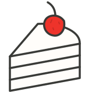

당신의 취향은
무엇인가요?
공간보다 맛,
내 입맛에 맞는 케이크 찾기
FIND YOUR TASTE초코케이크
클래식파는 익숙한 조합, 개성파는 색다른 재료와 조합이에요.
YOUR NEXT SWEET MOMENT
취향에 맞는 한 조각.
맛을 고르면, 케이크가 보여요.
선택한 맛에 맞는 케이크가 없어요
맛 조건을 조금 바꾸면 새로운 한 조각을 만날 수 있어요.
데모 메뉴이며 실제 판매 정보가 아닙니다.
사진은 AI로 만든 예시
이미지로, 실제 판매 제품이 아닙니다.